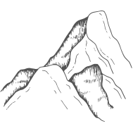

Laguna Grande
Ubicada en las cumbres del Páramo de la Rusia, a más de 3.500 msnm, Laguna Grande es un espejo de agua sagrado rodeado de frailejones y nacimientos de agua. Su paisaje ofrece una de las vistas más imponentes de la región, un escenario que transmite la fuerza y la pureza del páramo.
Para llegar, es necesario programar la salida desde muy temprano y contar con buen clima. El recorrido dura un poco más de dos horas pasando por El Encino, hasta alcanzar la parte más alta de la montaña, donde se deja el vehículo. Desde allí, se continúa a pie por un sendero de unos 3 km que conduce directamente a la laguna.
Debido a las condiciones propias del páramo, es fundamental llevar buena protección contra el frío, la humedad y el sol, garantizando así una experiencia segura y memorable en este entorno único.
Ubicación
Vía Charalá - Encino - Belén (Páramo de la Rusia). A unas 3 horas en vehículo desde Casa El Cedro.

Altura
Se encuentra a aproximadamente 3.700 msnm. Prepárate para un clima frío y aire puro de montaña.
Qué llevar
Chaqueta impermeable, botas de montaña, guantes, protector solar, gafas y snacks energéticos.
Senderismo
Caminata de intensidad media-alta. El terreno puede ser húmedo y requiere buena condición física.
Aventura en Campero 4x4
Se llega por camino destapado entre el paisaje del páramo, luego se toma un sendero con guías expertos.
Avistamiento
Observación de especies nativas. Se recomienda llevar binoculares.